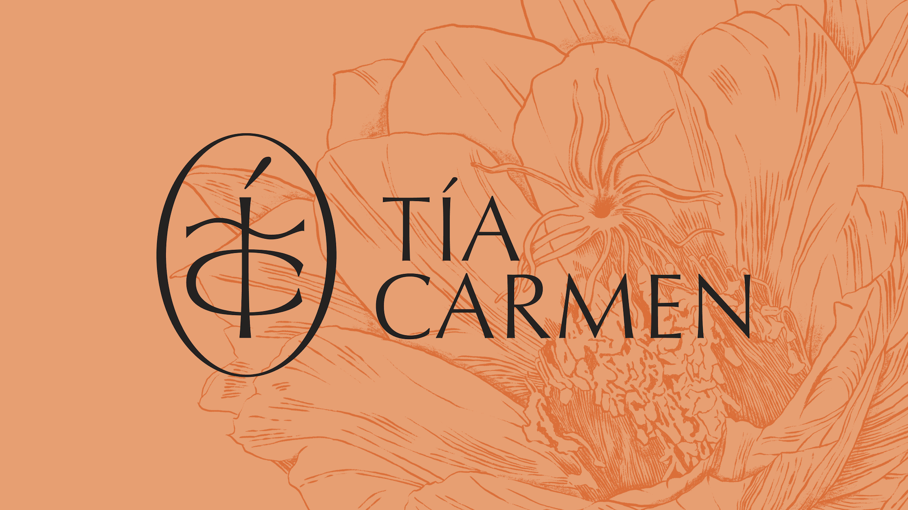
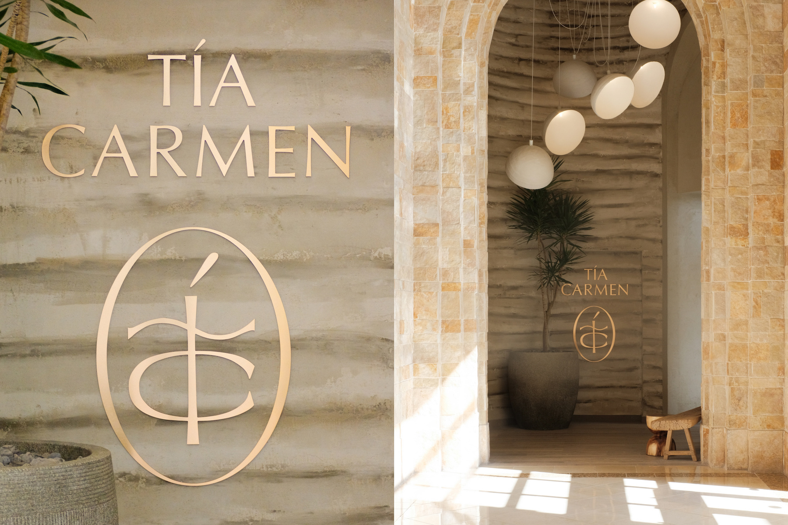

Tía Carmen Identity
Branding
Background
Tía Carmen is a new Phoenix, AZ restaurant created by Chef Angelo Sosa. The restaurant pays homage to chef Sosa’s Aunt (Tía) Carmen and celebrates the local landscape, farmers and community of the Southwest reflecting a mix of tradition and modernity.
Project Overview
Chef Sosa and restaurateur Mark Stone asked me and Greta Skagerlind to create a logo and identity system to be used across the restaurant.
Core to the identity is the TC “seal”, which references the restaurant’s initials and takes visual cues from organic forms.

We also created a suite of illustrations of plants and herbs indigenous to the Sonoran desert which are utilized in print materials like these check presenters below.